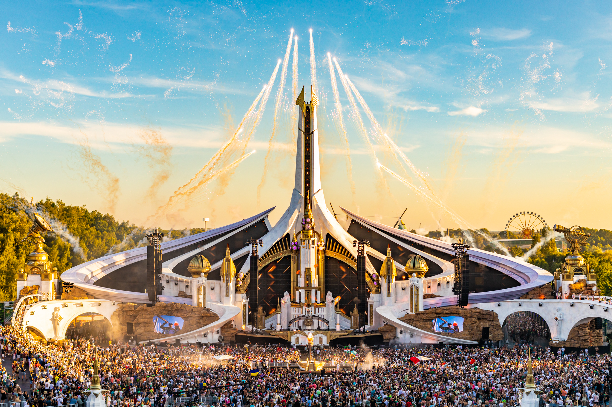
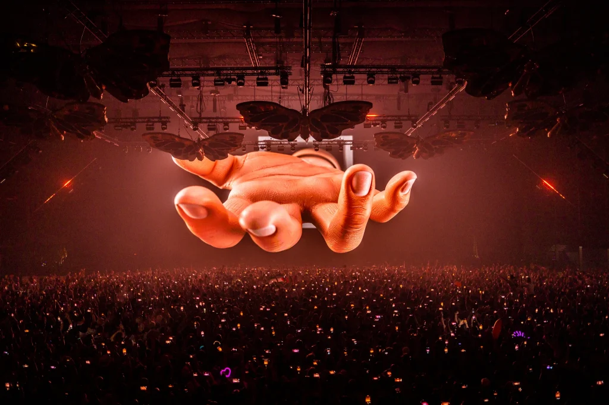
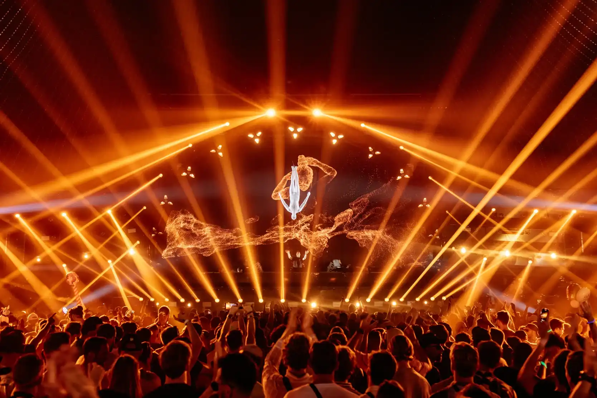
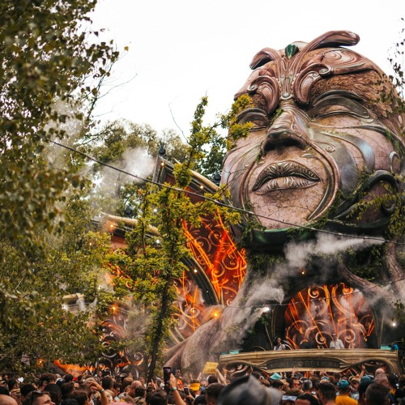
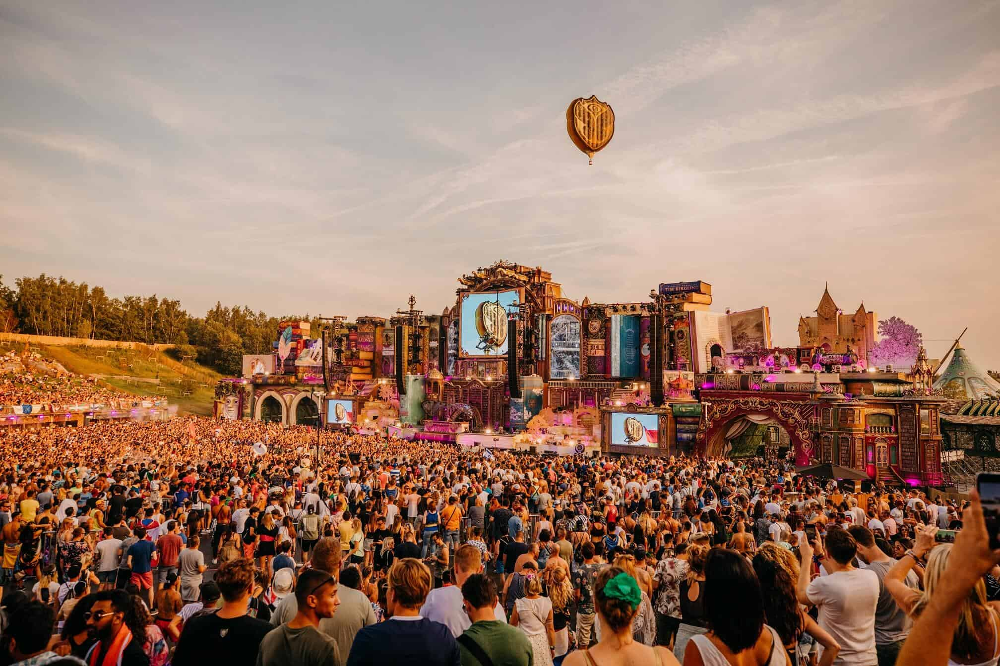
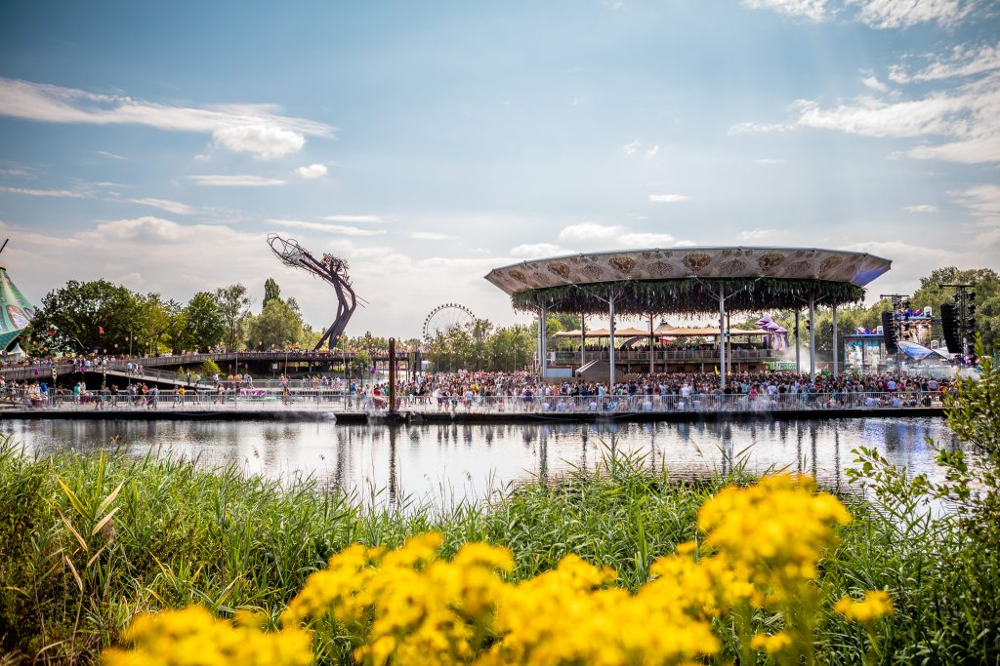
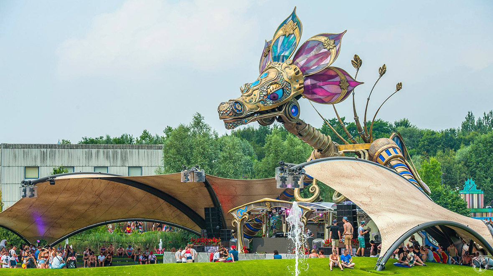
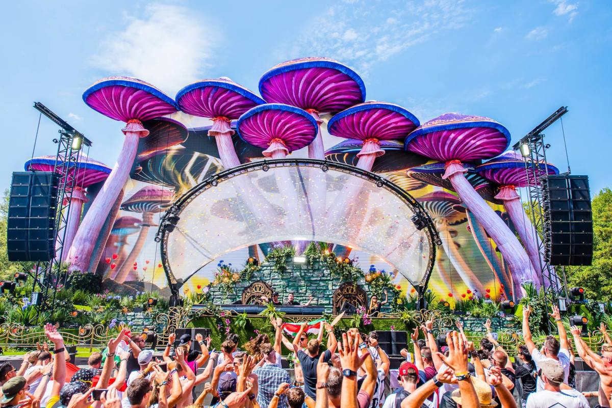

Los 8 escenarios más espectaculares de 2022
| Nombre | Foto | Breve descripción |
|---|---|---|
| Main Stage |  | 53 metros de altura, 270 metros de ancho, 61 láseres y más de 100 artistas en el escenario. La imponente estructura es la cara principal del festival. Un diseño futurista junto a un color que simboliza la paz en medio de la guerra y la luz después de la oscuridad. |
| Freedom Stage |  | Es considerado el segundo escenario más popular del festival. Su diseño cerrado permite que los sonidos envolventes y una enorme pantalla LED te lleven a un viaje inolvidable. Aquí, dominarán principalmente el house progressive y el hardstyle. |
| Atmosphere Stage |  | Es el tercero y más importante escenario. Reservado para los DJs y sellos más reconocidos de la escena underground actual. |
| Core Stage |  | Es uno de los escenarios que más está dando de qué hablar este año. Los organizadores llevaron a la realidad un diseño que solo pudimos ver en el evento virtual Tomorrowland Around The World 2020. El rostro que sobresale del lugar junto a la música orgánica y melódica de fondo planea llevar a los asistentes a un viaje interestelar. |
| The Library Stage |  | Este increíble y colorido escenario de espacio abierto remplaza al antiguo Lotus Stage. Tal y como su nombre indica, el diseño de esta estructura cuenta con libros acumulados uno tras otros que no son más que la metáfora de las últimas ediciones físicas. |
| The Crystal Garden |  | Este espectacular escenario remplaza al antiguo Garden of Madness, aunque solo de nombre, ya que el diseño se mantiene. Un espacio circular con techo embellecido de plantas y al frente, un escenario con piletas a sus costados. |
| The Rose Garden |  | Cuenta con un reconocible diseño de dragón con enormes alas estiradas, listo para lanzar llamas a través de la música. Dentro de sus diversas presentaciones, existen dos en especial: es el lugar ideal donde se presentan figuras del drum and bass y para este año, se sumará el set de La Era Dorada del EDM con sets del 2010-2012. |
| Youphoria Stage |  | Un espectacular escenario del que se desprenden coloridas setas. |